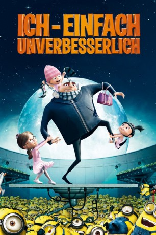

gesehen am 18.03.2015
gesehen am 18.03.2015Alternativ: Despicable Me gesehen am 18.03.2015
 
 IMDB-Wertung: 7.7 / 10
IMDB-Wertung: 7.7 / 10  Metascore:
Metascore: 
Der verschrobene Gru führt ein zurückgezogenes Leben – unscheinbar lebt er in einer kleinen Nachbarschaft irgendeines Vorortes. Aber was seine Nachbarn nicht wissen: Er plant das größte Verbrechen der Menschheitsgeschichte und will den Mond klauen. Auf dem Vormarsch mit technisch raffinierten Waffen und von der Polizei nicht zu stoppen, findet er aber dann doch – vielleicht – seine Bezwinger. Drei Waisenmädchen entdecken in ihm einen potentiellen Vater. Ist es nun mit seinem Verbrecherleben vorbei … oder stiehlt er doch noch den Mond?
Jahr: 2010
Dauer: 95 Minuten
FSK: 0
Land: USA Studio: Universal PicturesTonspuren: DTS - ,
Untertitel: Deutsch,
Auflösung: 1080p (1920x1040) Größe: 3778 MB
Genre: Animation/Trick, Komödie, Familie, Fantasy
Regisseur: Pierre Coffin, Chris Renaud
Drehbuch: Cinco Paul, Ken Daurio, Sergio Pablos
Soundtrack: Heitor Pereira, Pharrell Williams
Darsteller:
 Steve Carell als Gru
Steve Carell als Gru Jason Segel als Vector
Jason Segel als Vector Russell Brand als Dr. Nefario
Russell Brand als Dr. Nefario Julie Andrews als Gru's Mom
Julie Andrews als Gru's Mom Will Arnett als Mr. Perkins
Will Arnett als Mr. Perkins Kristen Wiig als Miss Hattie
Kristen Wiig als Miss Hattie Miranda Cosgrove als Margo
Miranda Cosgrove als Margo Elsie Fisher als Agnes
Elsie Fisher als Agnes Pierre Coffin als Tim the Minion / Bob the Minion / Mark the Minion / Phil the Minion / Stuart the Minion
Pierre Coffin als Tim the Minion / Bob the Minion / Mark the Minion / Phil the Minion / Stuart the Minion Chris Renaud als Dave the Minion
Chris Renaud als Dave the Minion Jemaine Clement als Jerry the Minion
Jemaine Clement als Jerry the Minion Jack McBrayer als Carnival Barker / Tourist Dad
Jack McBrayer als Carnival Barker / Tourist Dad Danny McBride als Fred McDade
Danny McBride als Fred McDade Mindy Kaling als Tourist Mom
Mindy Kaling als Tourist Mom Rob Huebel als Anchorman
Rob Huebel als Anchorman Ken Jeong als Talk Show Host
Ken Jeong als Talk Show Host Katie Leigh als Additional Voices
Katie Leigh als Additional Voices Ranjani Brow als Additional Voices
Ranjani Brow als Additional Voices Scott Menville als Additional Voices
Scott Menville als Additional Voices Holly Dorff als Additional Voices
Holly Dorff als Additional Voices Al Rodrigo als Additional Voices
Al Rodrigo als Additional Voices James Kyson als Additional Voices
James Kyson als Additional Voices John Hans Tester als Additional Voices
John Hans Tester als Additional Voices Edie Mirman als Additional Voices
Edie Mirman als Additional VoicesDatei: X:\Kinder Collections\Ich, einfach unverbesserlich\Ich - Einfach unverbesserlich 1 (2010, FSKo.Al., 1920x1040).mkv seit 12.03.2015
Festplatte: Kinder-Filme+Trick
 Es gibt insgesamt 13 Filme in der Gruppe 'Kinder Collections\Ich, einfach unverbesserlich'
Es gibt insgesamt 13 Filme in der Gruppe 'Kinder Collections\Ich, einfach unverbesserlich'